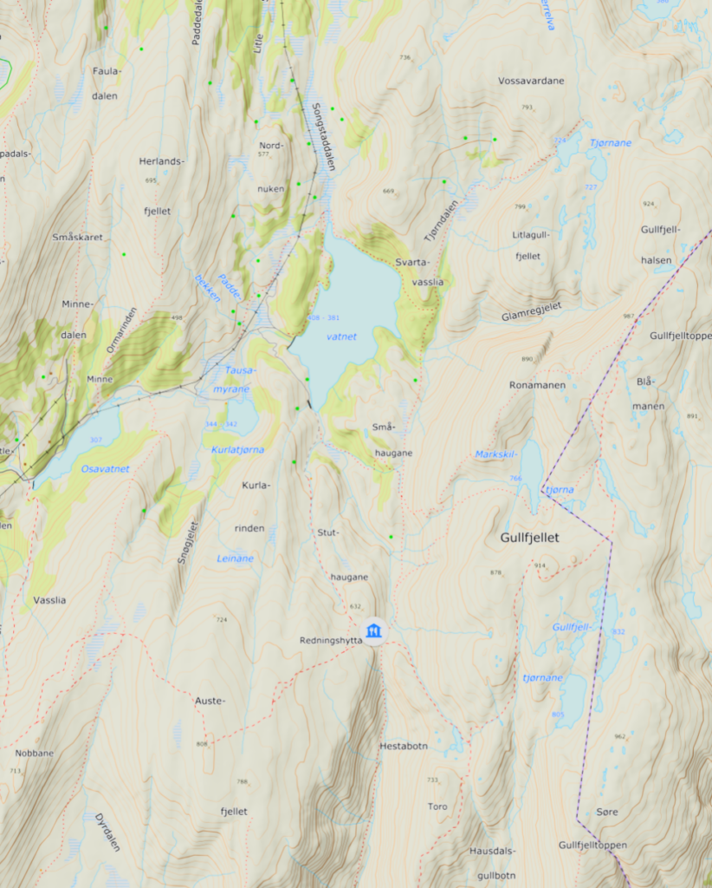

Gullfjellet (Bergen)
Ein video frå ein fin hausttur til Gullfjellet (987 moh) i Bergen kommune. Ruta gjekk frå Osavatnet, via Tausamyrane, Svartavatnet, Svartavasslia, Tjørndalen, Tjørnane, Gullfjellhalsen, Gullfjelltoppen, Gullfjellet, Redningshytta, Stuthaugane og ned att til Osavatnet. Framifrå terreng!
Om Gullfjellet frå Ut.no:
Gullfjellet er et meget populært turområde både sommer og vinter. Gullfjellstoppen, som rager 987 meter over havet, er høyeste fjellet på Bergenshalvøya. Turen fra Gullbotn over toppen er en klassiker. Området er velegnet for skibruk. Men pass på; Gullfjellet kan også være ekstremt værutsatt. I styggevær og tåke må man være påpasselig, følg varderekken og husk at pilen på hver varde peker mot den neste. Ha alltid med klart, kompass og ekstra klær.

God tur!